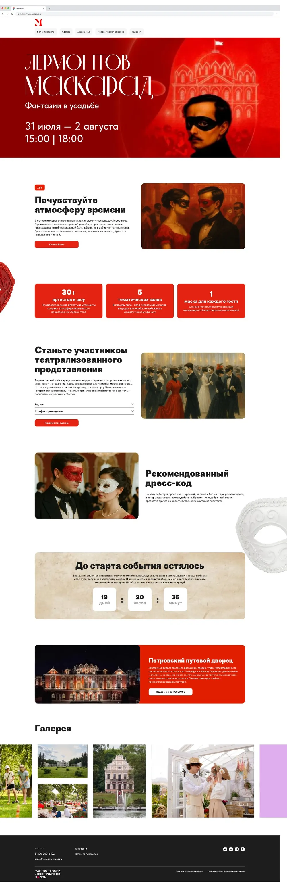
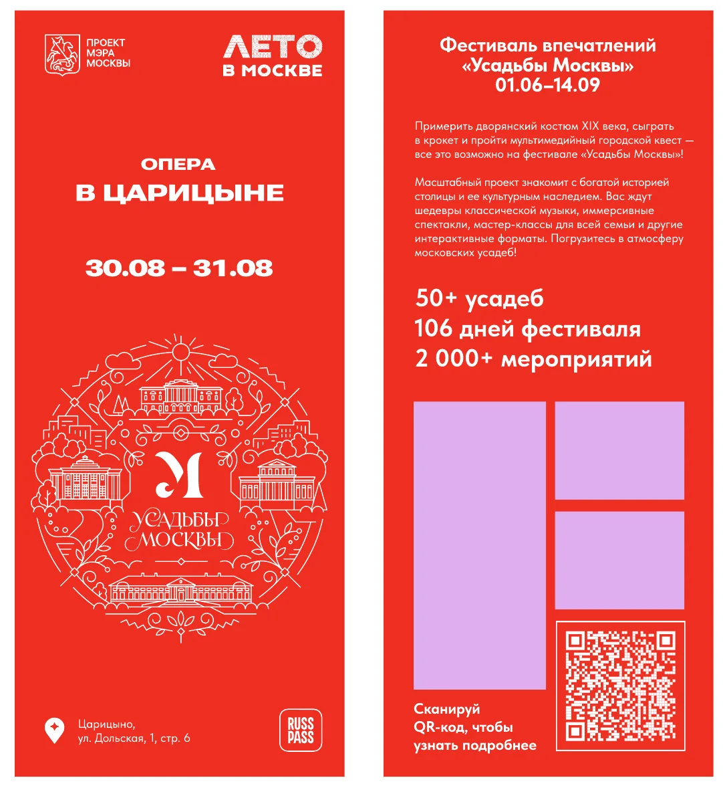

Сайт и digital фестиваля «Усадьбы Москвы»
Отвечал за креативы, тексты, флоу и CJM всех страниц фестиваля, который за сезон 2025 посетили больше 900 000 человек: от главной до лендингов отдельных событий.
900 000+гостей фестиваля за сезон 2025
2 000+мероприятий на сайте
1 000+точек на картах собрал и отмодерировал
50+усадеб
Результат
Вёл сайт и digital фестиваля, который за сезон 2025 посетили 900 000+ человек: CJM и тексты всех страниц, лендинги событий, карты на 1 000+ точек.
Как измеряли
- Ключевой визуал: сравнивал две концепции по CTR.
- Карты: 1 000+ точек, которые я собрал и отмодерировал.
Что сделал я
- Креативы, тексты, флоу и CJM главной, страниц кластеров и лендингов событий («Лермонтов. Маскарад», «Царицы бельканто» и другие).
- Писал ТЗ подрядчикам и сам собирал лендинги.
- Ставил задачи агентствам и принимал работу по фичам с бюджетом от 4 млн ₽.
- Сделал карту Коломенского и QR-квест.
Экраны
Прокрутите внутри




Хотите обсудить роль?
Написать в Telegram